UX/UI · Case Study
EckooGiving a voice to the stories of Aveiro
- Year
- 2021
- Timeline
- 4 weeks
- Role
- UX/UI Designer
- Project type
- SM Tools, User Product, B2C
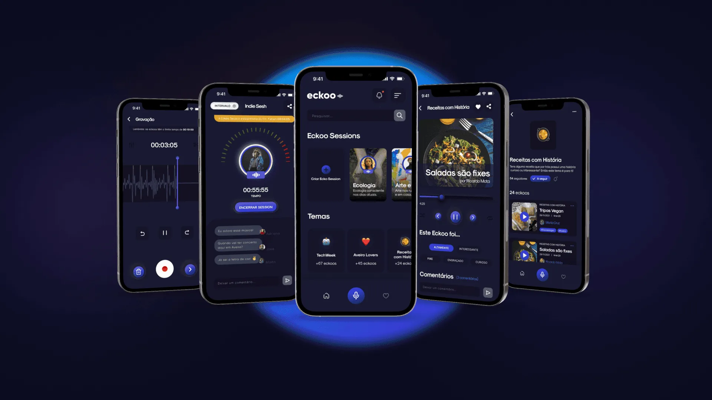
Eckoo is an audio platform that aims to give visibility to the diversity of Aveiro and the stories that are part of the lives of the population, with the voice of each user being the main source of creating the essence of the platform.
About the project
Developed by the Master's degree in Communication and Web Technologies, using Challenge Based Learning methodology, in partnership with the Aveiro Municipal Chamber (CMA). The challenge consisted in creating a product that would encourage people to become digital activists and also promote Aveiro's bid for the European Capital of Culture 2027.
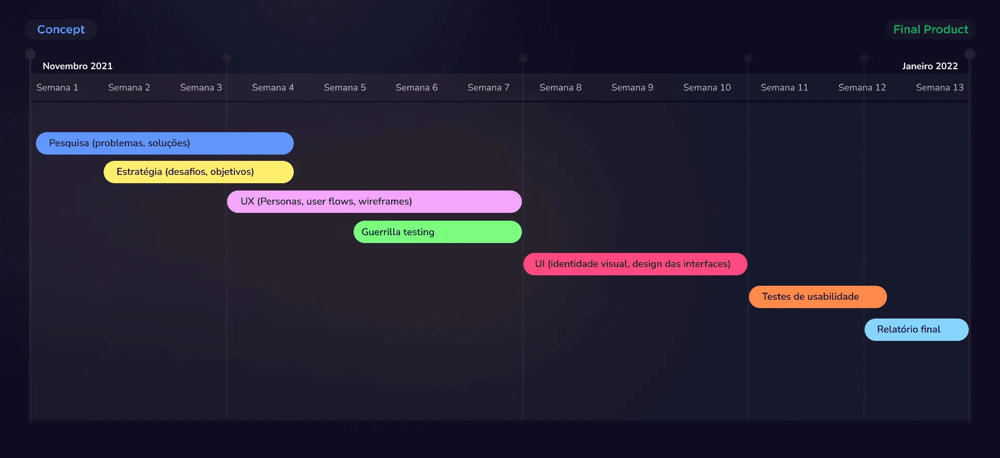
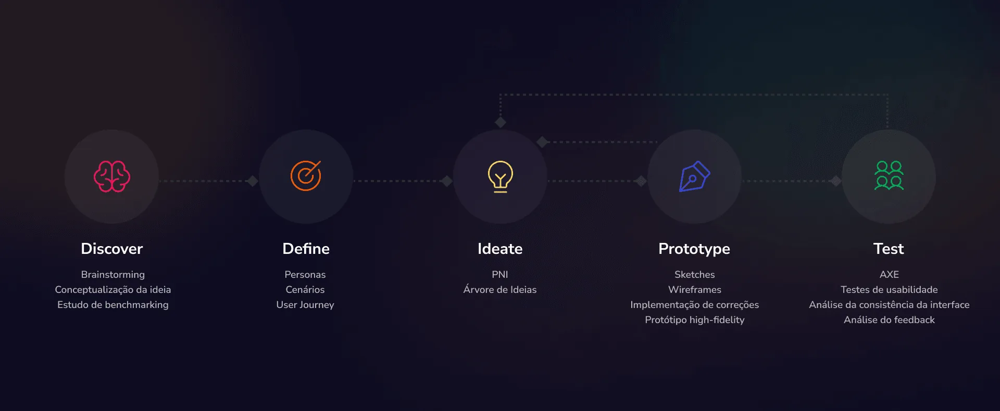
Brainstorming
From the analysis of the pillars of Aveiro's candidacy for the European Capital of Culture 2027: Culture, Soul, Tech, and Nature, we tried to explore how they were related to the city and what the main insights we could extract from that relationship were.
Solution
Eckoo is an audio-based application, viewed as a participatory space where the goal is to give voice to the Aveiro community, through the sharing of stories and talents. The main interactions that take place in the application are divided into two categories, there are the eckoos — small audio clips of up to 10 minutes — and the eckoo sessions — space for live audio sessions with a maximum duration of 1 hour.
Project objectives
- Develop a product capable of addressing the proposed challenge.
- Create a participatory, pleasant and inclusive space.
- Promote the participation of citizens and visitors of Aveiro in matters related to the city.
Benchmarking
By analyzing competitors, it was possible to find the most used features and follow a strategy plan to build the product's features that could make it differentiated.
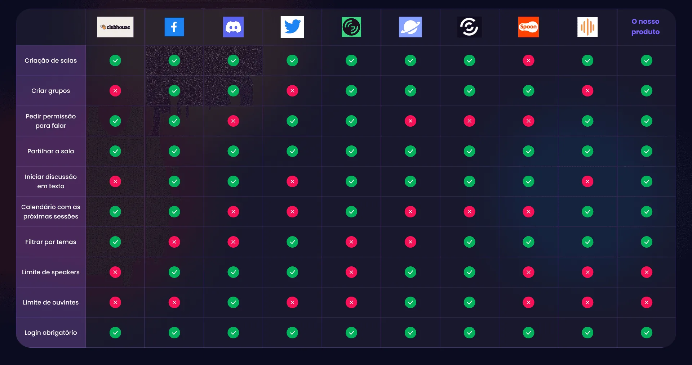
People
The following personas were defined based on the potential users who could use the product. This process helped us understand that different people have different needs and expectations.
By defining the users for whom we are building a product, it is possible to shape it so that it can meet their needs, offering the best possible user experience.
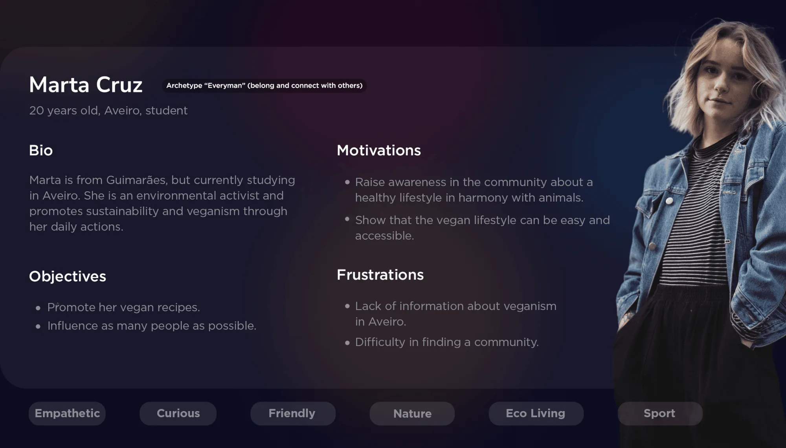
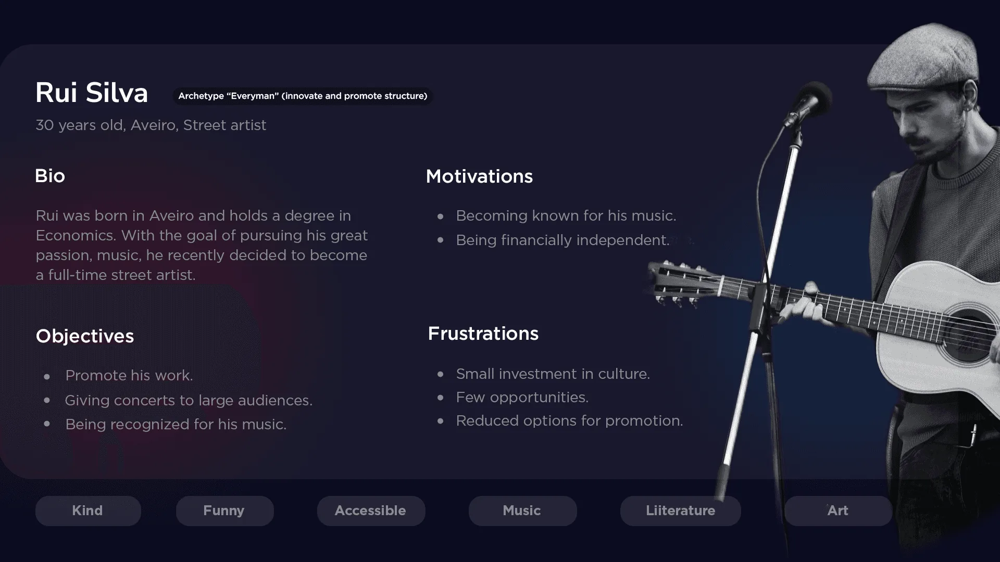
User journey
Building the user journeys helped us understand the context of use of the product. By seeing the usage from the user's perspective, it was possible to have a clear idea of all the steps the user would go through while interacting with the product.
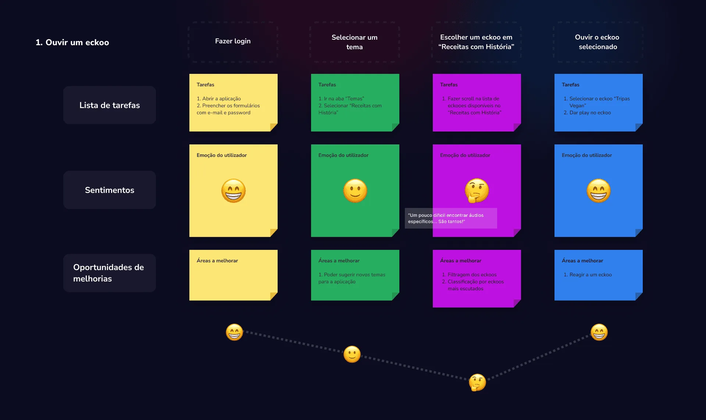
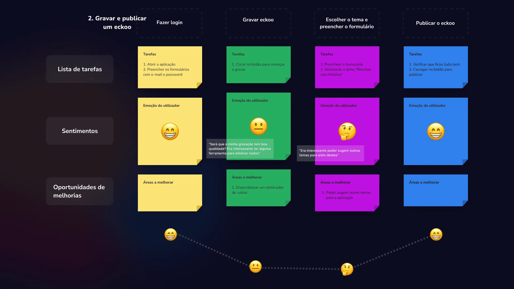
User flows
The user flow definition phase was realized in the organization of the structure of all the content created in the previous phases and that would reflect in the product.
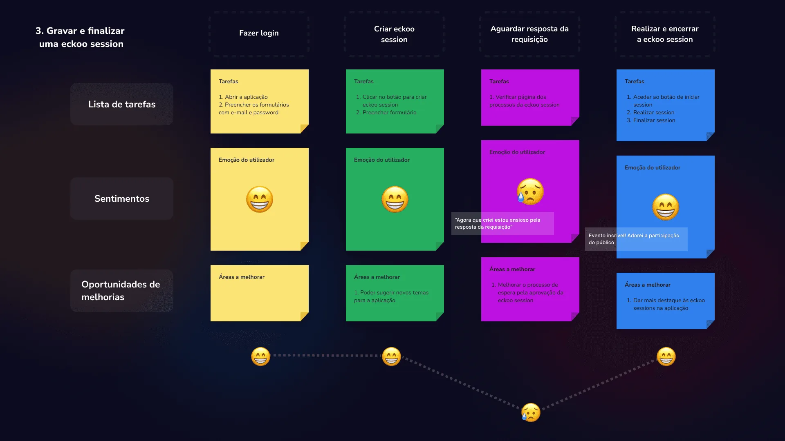
Wireframes
With the high-fidelity wireframes, it was possible to visualize and test the base structure of the user interface. It was also used as a way to save time and also verify the key functionalities of the product.
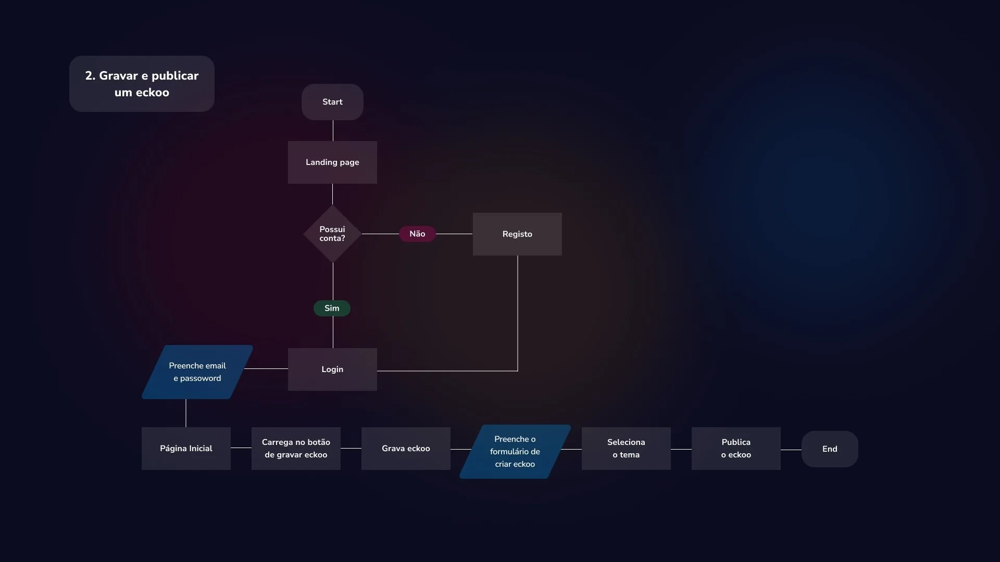
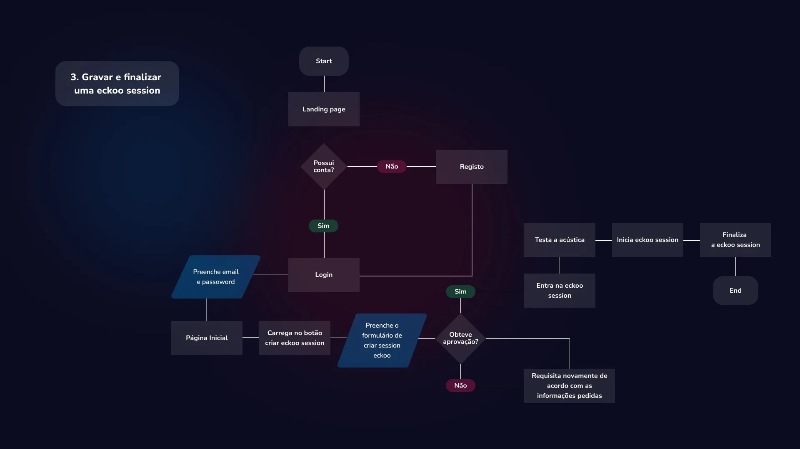
Anticipated Experience Evaluation
Anticipated Experience Evaluation
In product development, conducting tests through an iterative process always brings many advantages and justifies the cost spent on conducting the tests, as it allows us to identify faults, opportunities for improvements and obtain new development insights during the early stages of development.
Conducting Anticipatory Experience Evaluation also allowed us to potentially improve the product at a low cost stage, with a low-fidelity prototype.
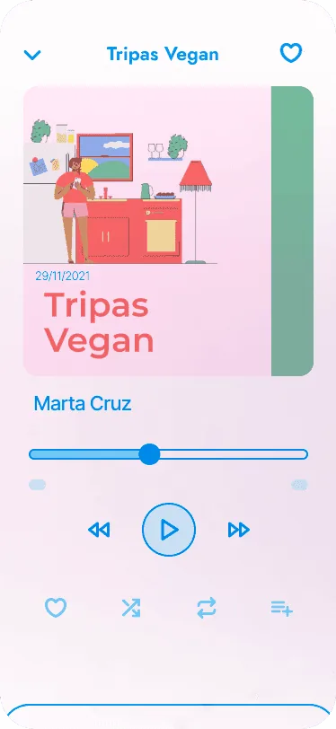
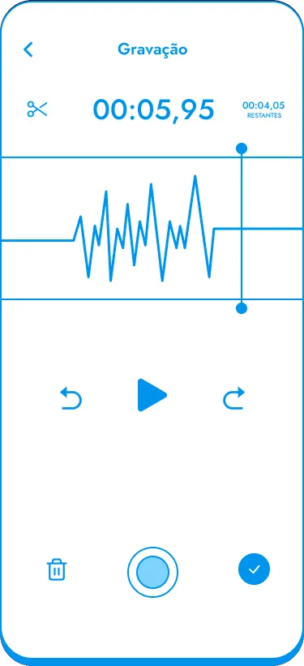
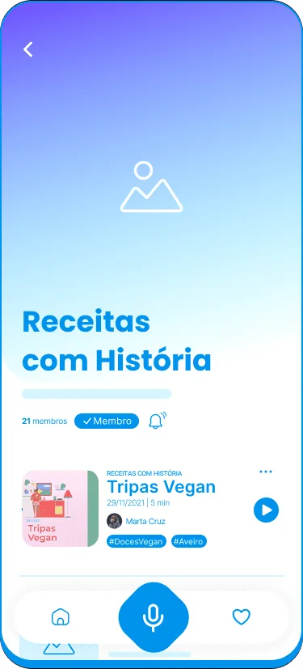
“It seemed like the button with the microphone was to indicate that it was recording.”
Participant 2
High-fidelity prototype
In the high-fidelity prototype, it was possible to apply the previously created visual identity, following accessibility rules and principles such as Gestalt, in order to translate, in the best possible way, what would be the application in real context.
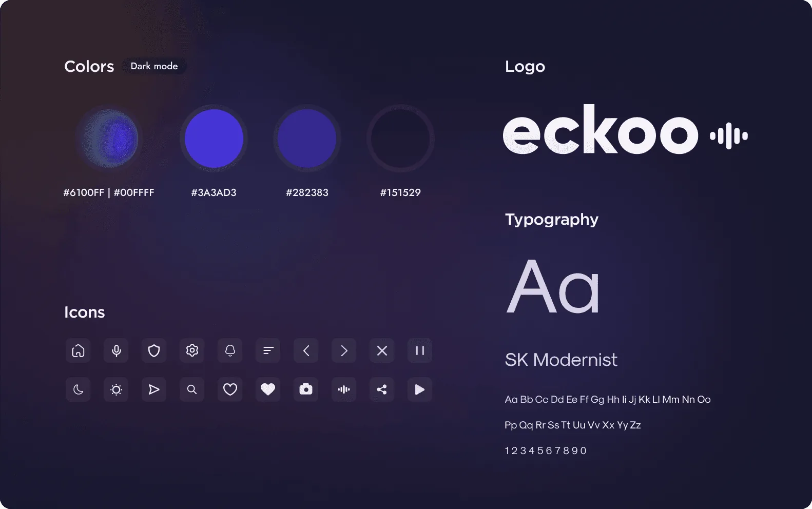
Onboarding
With the definition of onboarding, the user is introduced to the main features of Eckoo. The initial motivation is given for the user to navigate the service. In this case, the use of a virtual assistant that will guide the user by voice was chosen.
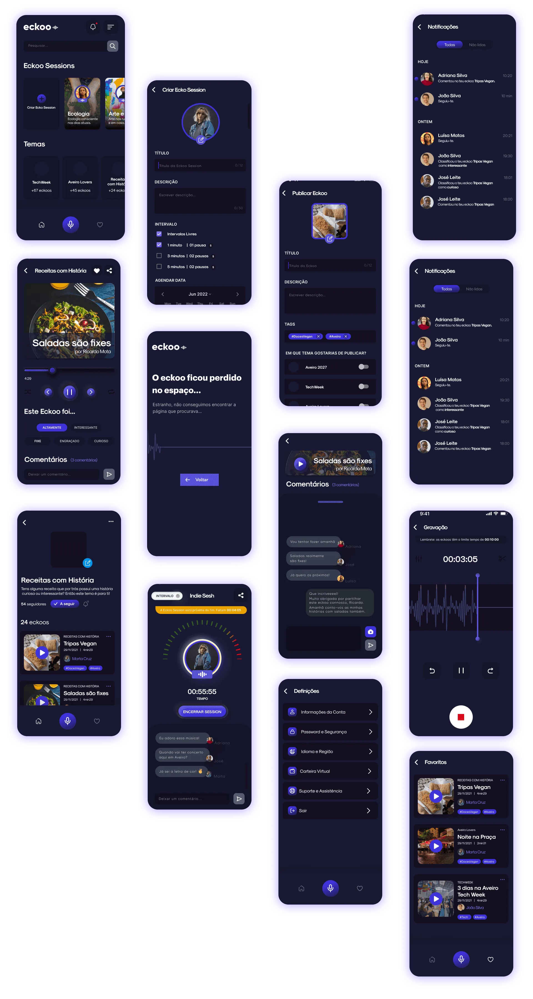
Usability tests
The completion of this testing phase allowed to confirm some of the changes made previously and, mainly, to identify possible improvements in the high-fidelity prototype. The tasks that the users performed were analyzed following three main metrics: success rate, completion time and errors per task.
In addition, to evaluate the overall usability level of the product, the System Usability Scale (SUS) was used, in complement to evaluate the user's feeling after the use of the product we used the Self-Assessment Manikin (SAM) assessment instrument.
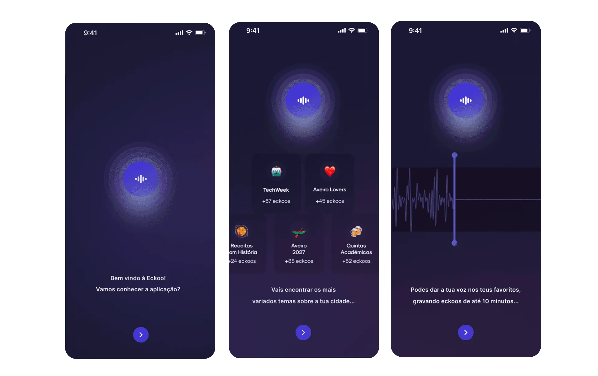
Results
Through the Self-Assessment Manikin (SAM) questionnaire, participants were questioned about their levels of satisfaction, motivation/excitement and situation control that they felt while testing the application.
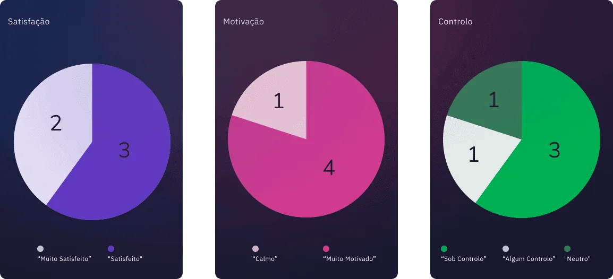
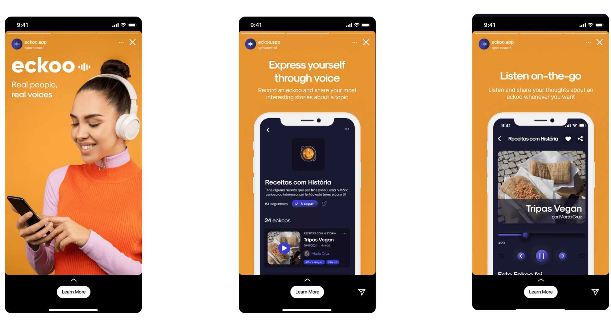
Conclusions and learnings
Importance of research. With the development of Eckoo, it was possible to understand the importance of initial research to understand the problem and find an appropriate solution, but also, the necessity of all the phases necessary to understand the real needs of the end user, following the Human-Centered Design methodology.
Usability. The success of a product lies in the user. If the user has a good experience, it is a step further for a product to be well accepted. With the testing phase, it was possible to identify the key functionalities and the irrelevant ones, as well as possible errors in the interfaces.
Accessibility. It is necessary to think about all types of users when designing a product. With this in mind, we sought to use guidelines for good practices in mobile interfaces, both in terms of hierarchy, spacing, and in relation to colors and contrasts between background color and font color.
Final product. We believe that all processes were fundamental for the evolution of Eckoo, based on the feedback given by real users, so that it was possible to finish the project with a product fully oriented to meet the expectations of the end user.
Next prøject
Aventor Global →